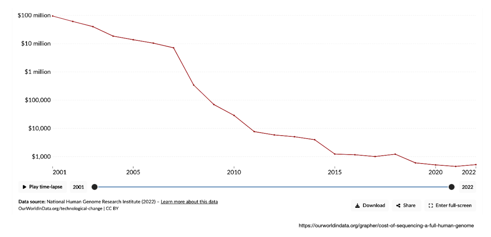
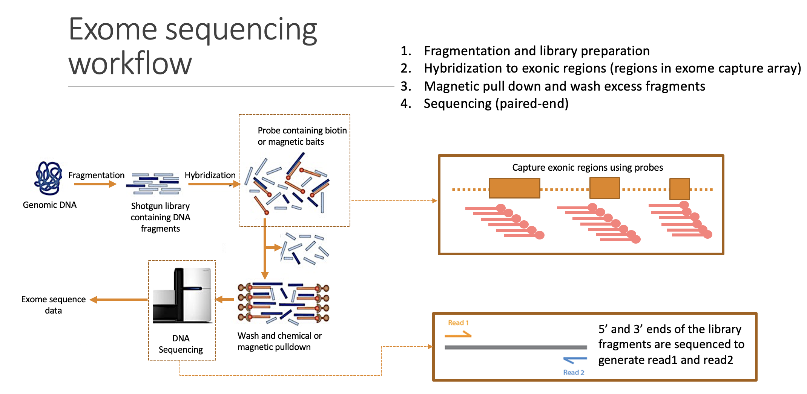
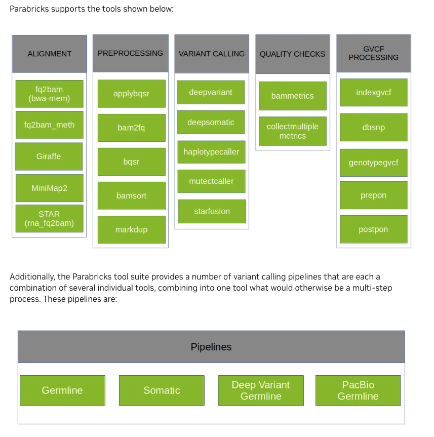

Introduction to Accelerated Genomics
Applied Machine Learning for Biological Data - Module 2, Day 5
Date: June 6, 2025
Time: 09:00-16:00
Prerequisites
Follow BioNT course - A practical introduction to bioinformatics or equivalent knowledge
Learning outcomes
Gain a foundational understanding of the NVIDIA Parabricks software suite
Acquire practical experience in using Parabricks tools for basic germline variant calling workflow
Overall schedule
Introduction to Docker
Introduction to GPU
Introduction to NGS
Basic CPU-native NGS data processing workflow
Introduction to NVIDIA Parabricks
Parabricks Hands-on
Parabricks vs CPU-native NGS data processing
Introduction to NGS
Next Generation Sequencing (NGS)
DNA Sequencing process
Process of determining the order of nucleotides in a genome (genome codes the complete set of instructions for cellular functions)
Next Generation Sequencing (NGS)
Increasing the throughput by massively parallelising the sequencing process
Sequencing throughput and sequencing cost
Today, we are no longer limited by the availability of sequencing data due to the rapidly decreasing cost
Sequencing cost over the years
Sequencing throughput over the years

Main steps of DNA sequencing

NGS data analysis (Germline variant calling)
Main steps in NGS analysis
graph TD;
i1(Raw data) --> 1
i2(Reference data) --> 1
1(Mapping raw data onto the reference)
1 -- Alignment file --> 2
2(Optimization & fine-tuning of the alignment file)
2 -- Optimised & fine-tuned alignment file --> 3
3(Identify DNA changes)
classDef highlight fill:#99ccff;
classDef white fill:#ffffff;
class 1,2,3, highlight;
Precision genomics
Tailoring disease prevention and treatment based on the person’s genetic makeup
Here, we analyse raw sequencing data and identify changes in DNA that could lead to a diseases
Raw data analysis involves a number of complex processes and the collections of such processes are commonly known as “Sequence analysis workflows”
Precision genomics in routine clinical practice
Sequence analysis workflows are routinely used in current clinical setting
However they all (a large majority) use CPUs for the computing power
Basic CPU-native NGS data processing workflow
Simplest NGS data processing workflows have two main stages
Read mapping and alignment refinement
Variant calling
Test data:
https://s3.amazonaws.com/parabricks.sample/parabricks_sample.tar.gzSource of the test data -
NVIDIA tutorials <https://docs.nvidia.com/clara/parabricks/4.3.0/tutorials/gettingthesampledata.html>_
Stage 1: Read mapping and alignment refinement
Step 1: BWA read mapping and sorting
#!/bin/bash
SAMPLE_NAME="pb_sample"
FASTA="Ref/Homo_sapiens_assembly38.fasta"
READ1="Data/sample_1.fq.gz"
READ2="Data/sample_2.fq.gz"
BAM_OUT="${SAMPLE_NAME}_CPU.bam"
## Run BWA MEM
### Source: https://github.com/nf-core/sarek/blob/f034b737630972e90aeae851e236f9d4292b9a4f/modules/nf-core/bwa/mem/main.nf#L30
bwa mem \
-t 64 \
-R "@RG\tID:rg1\tLB:lib1\tPL:bar\tSM:SM1\tPU:SM1_rg1" \
${FASTA} \
${READ1} ${READ2} \
| samtools sort -@64 -o ${BAM_OUT} -
samtools index -@64 -b ${BAM_OUT}
Step 2: GATK MarkDuplicates
#!/bin/bash
SAMPLE_NAME="pb_sample"
BAM_IN="${SAMPLE_NAME}_CPU.bam"
BAM_OUT="${SAMPLE_NAME}_markdup.bam"
## Mark duplicated reads in BAM file
gatk --java-options "-Xss3m -XX:-UsePerfData" MarkDuplicates \
--VALIDATION_STRINGENCY SILENT \
-I ${BAM_IN} \
-O ${BAM_OUT} \
-M metrics.txt \
--TMP_DIR temp_dir
samtools index ${BAM_OUT}
Step 3: GATK BaseRecalibrator
#!/bin/bash
FASTA="Ref/Homo_sapiens_assembly38.fasta"
KNOWN_SITES="Ref/Homo_sapiens_assembly38.known_indels.vcf.gz"
SAMPLE_NAME="pb_sample"
BAM_IN="${SAMPLE_NAME}_markdup.bam"
RECAL_FILE="CPU_recal.txt"
## Generate BQSR Report
gatk --java-options "-XX:-UsePerfData" BaseRecalibrator \
--input ${BAM_IN} \
--output ${RECAL_OUT} \
--known-sites ${KNOWN_SITES} \
--reference ${FASTA}
Step 4: GATK ApplyBQSR
#!/bin/bash
FASTA=GRCh38"/"GCA_000001405.15_GRCh38_no_alt_analysis_set.fna
BAM_IN="${SAMPLE_NAME}_markdup.bam"
RECAL_FILE="CPU_recal.txt"
BAM_OUT="${SAMPLE_NAME}_CPU_markdup_BQSR.bam"
## Run ApplyBQSR Step
gatk --java-options "-XX:-UsePerfData" ApplyBQSR \
-R ${FASTA} \
-I ${BAM_IN} \
--bqsr-recal-file ${RECAL_FILE} \
-O ${BAM_OUT}
Stage 2: Variant calling via HaplotypeCaller
#!/bin/bash
set -euo pipefail
SAMPLE_NAME="pb_sample"
FASTA="Ref/Homo_sapiens_assembly38.fasta"
BAM_IN="${SAMPLE_NAME}_CPU_markdup_BQSR.bam"
## Variant calling with HaplotypeCaller
gatk --java-options "-XX:-UsePerfData" HaplotypeCaller \
--input ${BAM_IN} \
--output ${BAM_IN}.vcf \
--reference ${FASTA} \
--native-pair-hmm-threads 64
NVIDIA Parabricks
Parabricks offers range of accelerated NGS data processing tools/commands
-
Parabricks was built from the ground up by GPU computing and Deep Learning experts who wanted to develop the fastest and most efficient possible implementation of common genomics algorithms.
We can use these commands and create a simple NGS data processing workflows with two main stages
Read mapping and alignment refinement
Variant calling

Ref:Parabricks workflow (basic workflow)
Stage 1: Read mapping and alignment refinement
Step 1: fq2bam

Step 2: applybqsr
Compatible GATK4 Command:
gatk ApplyBQSR
Stage 2: Variant calling
Parabricks HaplotypeCaller

Hands-on session: Link
Results
Output files
-rw-r--r-- 1 root root 4819386868 Dec 4 14:11 pbrun_fq2bam_GPU.bam
-rw-r--r-- 1 root root 6882792 Dec 4 14:11 pbrun_fq2bam_GPU.bam.bai
-rw-r--r-- 1 root root 22693986 Dec 4 14:26 pbrun_fq2bam_GPU.bam_applybqsr.vcf
-rw-r--r-- 1 root root 4947983325 Dec 4 14:18 pbrun_fq2bam_GPU_applybqsr.bam
-rw-r--r-- 1 root root 6882792 Dec 4 14:18 pbrun_fq2bam_GPU_applybqsr.bam.bai
-rw-r--r-- 1 root root 87690 Dec 4 14:11 pbrun_fq2bam_GPU_chrs.txt
-rw-r--r-- 1 root root 395623 Dec 4 14:11 pbrun_recal_gpu.txt
Variant counts
grep -vc "#" pbrun_fq2bam_GPU.bam_applybqsr.vcf
> 127720
Parabricks vs CPU-native NGS data processing
Runtime comparison and speedup calculation
Speedup = Runtime of base-process / Runtime of accelerated-process
Step |
Base-runtime |
Accelerated-runtime |
Speedup |
|---|---|---|---|
Mapping and |
1 h, 25 min, 14 sec |
2 min, 39 sec |
32.16 |
GATK ApplyBQSR |
29 min, 36 sec |
34 sec |
52.24 |
GATK HaplotypeCaller |
1 h, 35 min, 5 sec |
3 min, 13 sec |
29.55 |